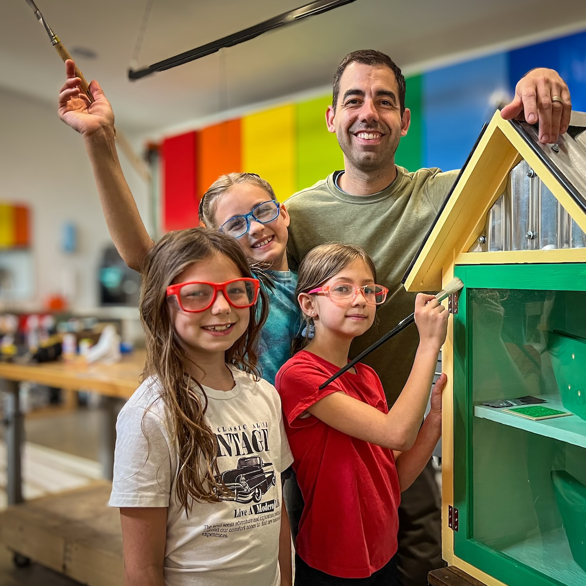

This project has become less about building and more about how we build together.
The girls are involved in almost every part of the process. They're not on the saw yet, but they run the nailer, sand, prime, paint, and use both drills and drivers. We also talk through the business side of the project. Costs, design improvements, and how to make something like this sustainable. Jane and I even meet to talk through sales ideas.
A big part of this is getting them to work together. To lean on each other's strengths, to build on each other's ideas, and to figure things out as a group. Not just dividing the work, but actually sharing it.
Every so often, I put together a simple update for the family. We go over web traffic, open sales opportunities, and what we've built so far. It's a way to keep all of us imagining the future.
At bedtime, Ruby and Lucy like to come up with ideas for future libraries. I help shape those ideas, but they're starting to take on a life of their own. I still keep things supervised, but that's changing. They're getting closer.
At some point, they won't need me for this. When that happens, I'll be proud in a way that's hard to fully explain.
Meet the rest of the family »